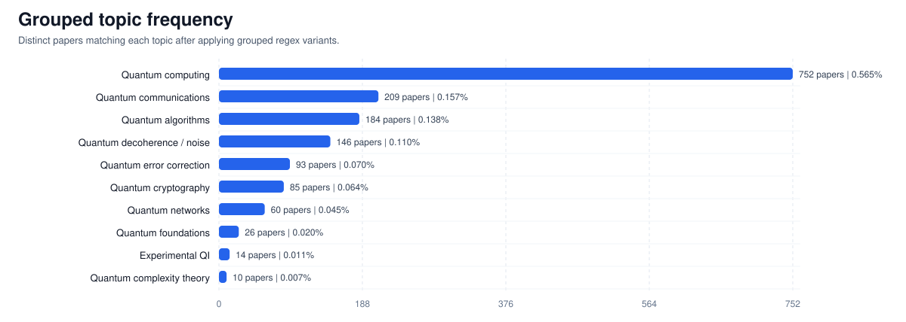
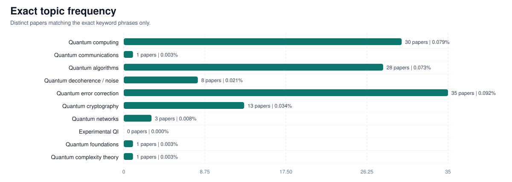
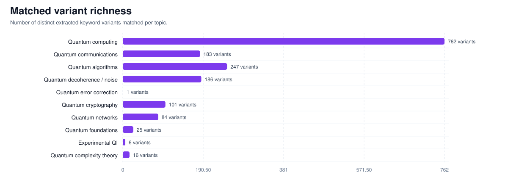

Table: classifications_and_keywords.arxiv_from_kaggle_keywords_title_abstract_boost_on_q15_57588cc1
Focus set: quantum_information_focus



| Topic | Grouped papers | Grouped prevalence | Exact papers | Avg score |
|---|---|---|---|---|
| Quantum computing | 752 | 0.565% | 124 | 0.7877 |
| Quantum communications | 209 | 0.157% | 11 | 0.7784 |
| Quantum algorithms | 184 | 0.138% | 87 | 0.7827 |
| Quantum decoherence / noise | 146 | 0.110% | 43 | 0.7926 |
| Quantum error correction | 93 | 0.070% | 93 | 0.8039 |
| Quantum cryptography | 85 | 0.064% | 48 | 0.7898 |
| Quantum networks | 60 | 0.045% | 20 | 0.7828 |
| Quantum foundations | 26 | 0.020% | 7 | 0.7774 |
| Experimental QI | 14 | 0.011% | 0 | 0.8140 |
| Quantum complexity theory | 10 | 0.007% | 3 | 0.7801 |
| Topic | Variant | Papers | Occurrences |
|---|---|---|---|
| Experimental QI | quantum information experiments | 8 | 8 |
| Experimental QI | experimental quantum teleportation | 2 | 2 |
| Experimental QI | experimental quantum information | 1 | 1 |
| Experimental QI | experimental quantum process | 1 | 1 |
| Experimental QI | experimental quantum state | 1 | 1 |
| Experimental QI | quantum information experimentally | 1 | 1 |
| Quantum algorithms | quantum algorithm | 90 | 90 |
| Quantum algorithms | quantum algorithms | 87 | 87 |
| Quantum algorithms | efficient quantum algorithm | 12 | 12 |
| Quantum algorithms | new quantum algorithms | 9 | 9 |
| Quantum algorithms | present quantum algorithm | 8 | 8 |
| Quantum algorithms | new quantum algorithm | 5 | 5 |
| Quantum algorithms | propose quantum algorithm | 4 | 4 |
| Quantum algorithms | quantum algorithm evaluating | 4 | 4 |
| Quantum algorithms | quantum algorithm factoring | 4 | 4 |
| Quantum algorithms | quantum algorithm solves | 4 | 4 |
| Quantum algorithms | quantum algorithms solve | 4 | 4 |
| Quantum algorithms | adiabatic quantum algorithm | 3 | 3 |
| Quantum algorithms | adiabatic quantum algorithms | 3 | 3 |
| Quantum algorithms | based quantum algorithm | 3 | 3 |